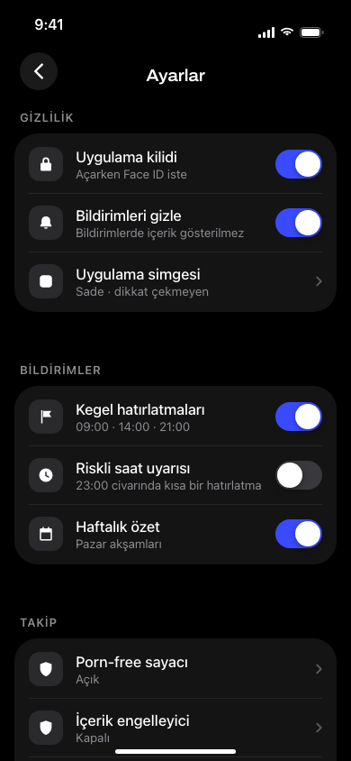
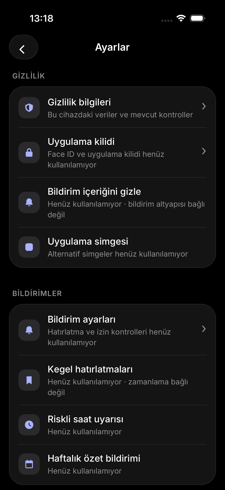
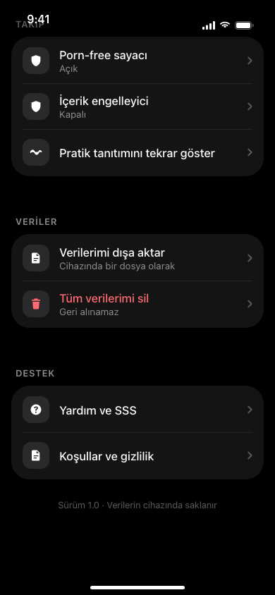
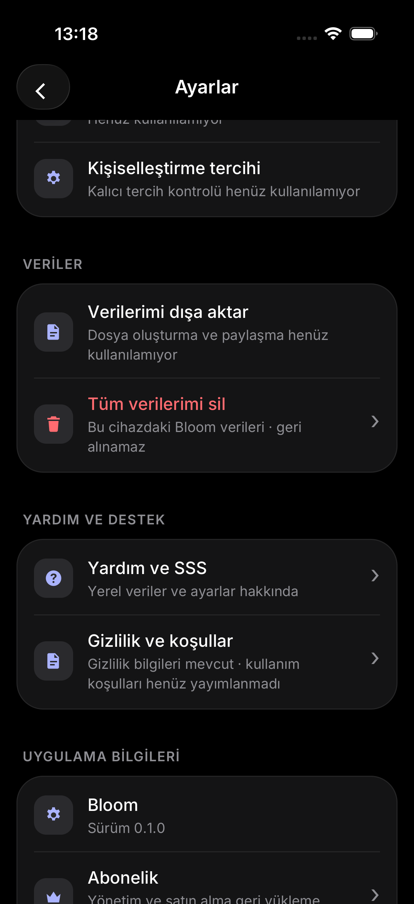
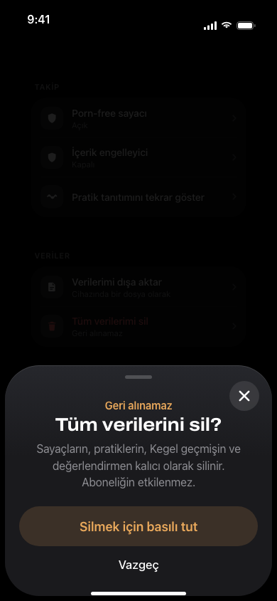
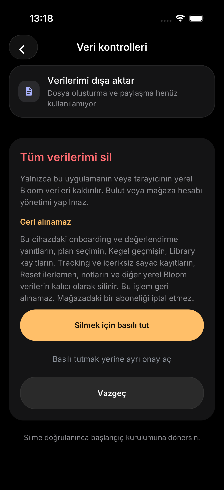

Bloom — Settings & Privacy
Phase 11.5.2 · 13 Ekim 2026. Kaynak: tasarim.html ve prototip.html “Profil ve ayarlar”. HTML verileri ve switch’ler yalnız görsel fixture’dır. Native ekranlar mevcut gerçek veri yaşam döngüsünü kullanır.
QA raporu · Uygulanan / ertelenen checklist
Ayarlar · üst
HTML switch ve saat fixture’ları; native sürümde dürüst unavailable metinleri ve gizlilik bağlantısı.

Orijinal HTML · 390×844
Native iOS · 402×874ptVeriler ve destek
Native export unavailable; silme gerçek veri kontrollerine gider. Uzun açıklamalar daha çok satıra yayılır.

Orijinal HTML · 390×844
Native iOS · 402×874ptGeri alınamaz silme onayı
HTML bottom sheet; native guarded ekran içindeki scroll edilebilir amber panel ve ayrı erişilebilir onay.

Orijinal HTML · 390×844
Native iOS · 402×874ptNative durum kanıtları
Final review: 02 ve 14, Expo “Refreshing…” katmanı olmadan yeniden çekildi. 13 ve 15, tek Türkçe hata metni düzeltmesinden önceki tarihsel QA görüntüleridir.